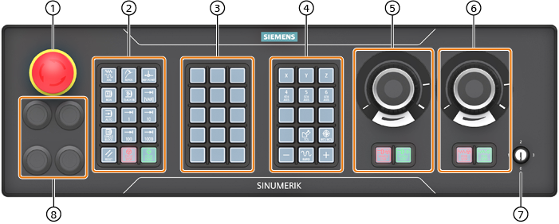

In this example, the MCP 2200c machine control panel is used to illustrate the operator controls and displays of a Siemens machine control panel.
Overview
① | Emergency stop button |
② | Keypad 1 (operating mode block) |
③ | Keypad 2 (customer keys) |
④ | Keypad 3 (axis block) |
⑤ | Powerride 2 (spindle) + keypad 3.2 |
⑥ | Powerride 1 (feed) + keypad 3.1 |
⑦ | Key-operated authorization switch |
⑧ | 4x mounting space for 22.5 mm elements with slide-in labels |
Operator controls
Labeling of the keys
The keys are designed with replaceable caps for machine-specific adaptations. The key caps can be freely inscribed using a laser. Alternatively, you can use transparent key caps and insert labels.
Operator controls
EMERGENCY STOP button
 | Press the button in situations where:
All drives will be stopped with the greatest possible braking torque. |
| | Machine manufacturer For additional responses to pressing the EMERGENCY STOP button, please refer to the machine manufacturer's instructions. |
RESET
| |
|
Program control
Operating modes, machine functions
Traversing axes with rapid traverse override and coordinate switchover
Spindle control with override switch
<SPINDLE STOP> Stop spindle. | |
| | <SPINDLE START> Spindle is enabled. |